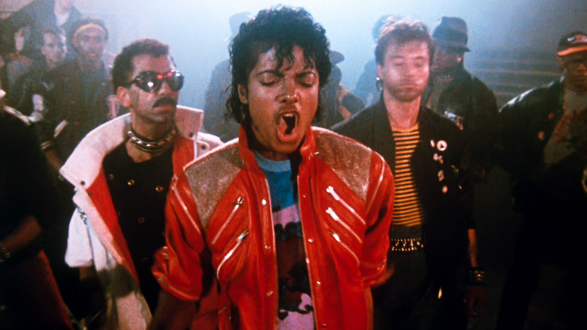
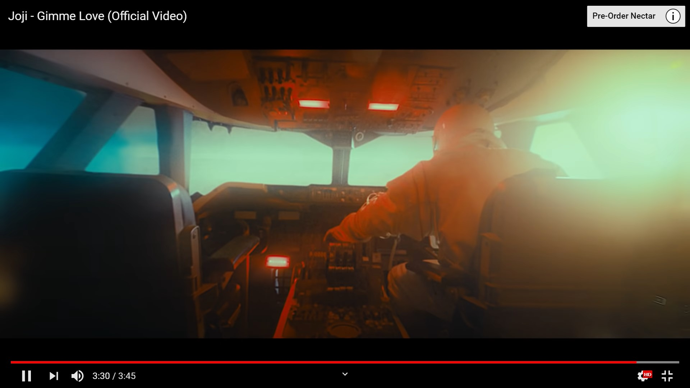
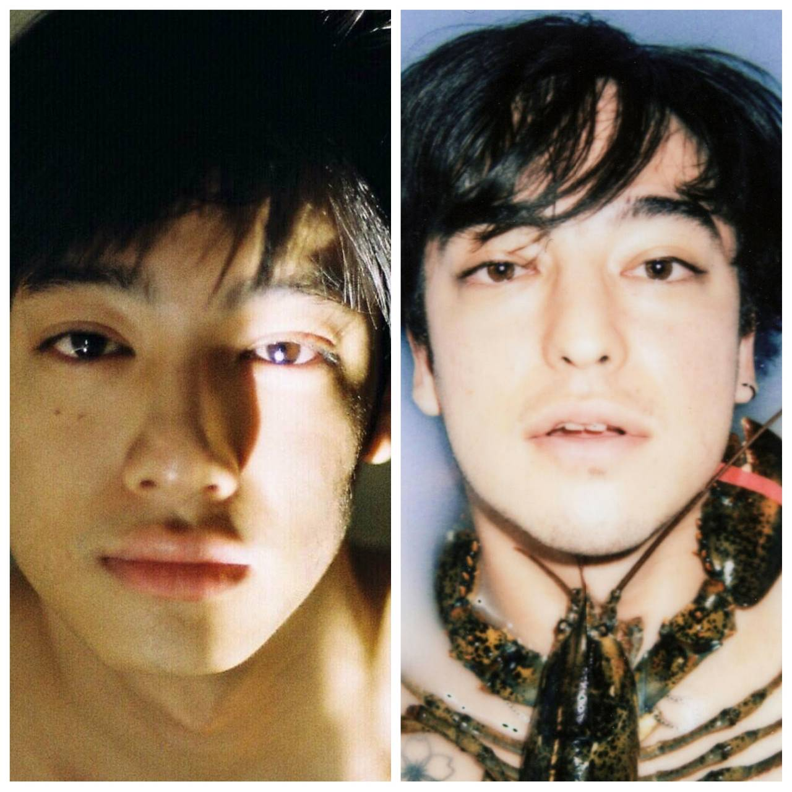

Joji – Gimme Love
收錄於Nectar專輯裡，這首歌和他過去的作品有著同樣的風格，在 lo-fi 的電子編曲下瀰漫著哀傷憂愁的氛圍。他祈求著所愛之人能重新回到他的懷抱中，不斷的重複著gimme love，讓他能再次擁有愛情。
▲finding strange sound?
在之前的訪談中Joji有提到過自己喜歡一些比較奇特的聲音，類似爆炸聲或金屬聲.摩擦聲等等，在這個作品裡也可以聽到，從一開頭就有了，會讓人一直想重複聽…試著聽清楚的感覺。而且我覺得那個聲音會讓我想到Michael Jackson的作品，"Beat It"或"Jelly Bean"，帶有點Old Skool的感覺，感覺和mv復古像有相呼應。
▲Michael Jackson-Beat It
而這首歌的mv也和以往他的許多作品一樣，做出比較以前的感覺，只是這一次我比較不太懂更深層的意思，最後還是看網上其他人的評論。。。有很多種的說法，我個人最喜歡的是: Joji對戀情做出了努力，但這種關係似乎已經破裂。他回憶起“灰燼與火焰”的感覺。也許是因為他的愛人已經沒有感覺。就算復合也回不去以前那樣。而他是用火箭來表達，對於火箭無法升空，所有的工作人員都一再嘗試所有的零件拼湊等等，而他則是直接搭上並啟動，但儘管做出如此大的犧牲還是得不到結果，消失在宇宙。。。
▲Rocket launching...(MV)
第一次聽到這首歌時，是在Spotify的熱門新歌榜上聽到的，上學的路途中，當時的感覺是這首歌很可愛，因為它還滿洗腦的，以為是一首在和伴侶撒嬌的歌，而且不知道是不是聽到這首歌，我覺得我那一整天的心情都很好ˊ_>ˋ
LYRICS
Gimme, gimme love, gimme, gimme love 賜給我愛情吧 Gimme, gimme love, gimme, gimme love 讓我擁有愛情吧 When I’m gone, when I’m gone 當我離開時 當我離開時 Gimme, gimme love, gimme, gimme love 賜給我愛情吧 Gimme, gimme love, gimme, gimme love 讓我擁有愛情吧 When I’m gone, when I’m gone 當我離開時 當我離開時 ⠀⠀⠀⠀⠀⠀⠀⠀⠀⠀ ⠀ Swing around front, let me inside 快速轉向前方 你讓我進去 Playin’ my song into my sides 在我面前播放著我的歌曲 It hurts, I can’t lie 老實說 這讓我很受傷 Remember those times I fought to get out? 記得那時我為了出去而反抗著 I want to get out 我渴望能離開 Those pictures so clear, they fade in my mind 這些畫面太清晰 他們散逸在我腦海中 You leavin’ me here with ashes and fire 你把我丟在這個充滿煙硝和烈火地方 These people don’t heal 這些人不會痊癒 These people don’t feel 這些人什麼都感覺不到 These people aren’t real 這些人不是真實的 So make me this deal 所以答應我的請求吧 Won’t you? 可以嗎 ⠀⠀⠀⠀⠀⠀⠀⠀⠀⠀ ⠀ Gimme, gimme love, gimme, gimme love 賜給我愛情吧 Gimme, gimme love, gimme, gimme love 讓我擁有愛情吧 When I’m gone, when I’m gone 當我離開時 當我離開時 Gimme, gimme love, gimme, gimme love 賜給我愛情吧 Gimme, gimme love, gimme, gimme love 讓我擁有愛情吧 When I’m gone, when I’m gone 當我離開時 當我離開時 ⠀⠀⠀⠀⠀⠀⠀⠀⠀⠀ ⠀ Look into your heart and let me know 我望進你的內心 而你讓我領悟了 Do things turn black and gray as they go? 難道一切都會隨著時間慢慢褪色成黑白的嗎？ When I’m far too gone, can you show me love? 當我已經遠遠離開 你能讓我看到愛情嗎 Give me love 讓我擁有愛情嗎 Caught in a river of rockers and dreams 我掉進了讓人充滿幻想的洪流中 Oh, will you keep up with me? 那你願意與我一起懷抱夢想嗎？ Everyone’s looking for someone to hold 每個人都在尋找著能緊抱著的人 But I can’t let you go 但我卻無法放手讓你離開
無關緊要小訊息
- Joji的youtube帳號名稱是sushitrash，而他表示命名的原因是因為當時還沒有人取過，而且他覺得這樣很瘋狂，就不管了。
- 我覺得Joji長得跟一位台灣得藝人很像，叫做劉修甫，是之前演我的孩子不是我的孩子的男主角。ㄜ…但是比較帥的還是劉修甫。
- 當歌手之前是個搞笑youtuber(Pink Guy)，最為廣為人知的影片是Harlem Shake(哈林搖)，而人們還認為是因為他的影片讓當時Baauer的Harlem Shake能登上Billboard百大熱門榜上。但之後他為此感到非常的困擾，因為認為人們總是對他有既定的印象，他總是圖想跳脫，但卻無法。還出了許多的歌曲來表達這種情緒(Demons.Slow Dancing In The Dark…)。

▲左:劉修甫.右:Joji